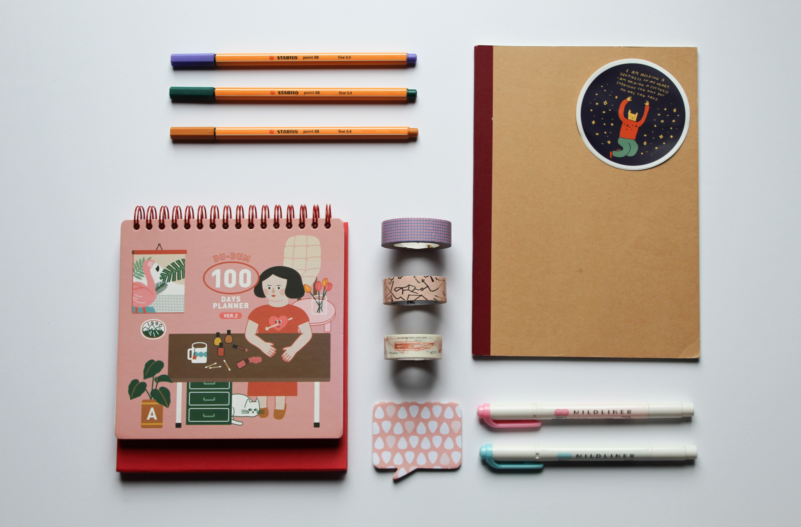

12 Ways to be more productive
Posted on 19th May, 2021 in Simpler Life

My colleague, to me one evening : “Hey, I have been trying to complete this file since morning
and still I am only half
done.”
Me: “Is it too big to finish in a day?”
Colleague: “That’s the thing, it is not too big. I could have easily finished it today”
----------------------------------------------------------------------------------------------------------------------------------------------------------------------------------
Have you ever been in a situation as my colleague above? At least I have been. So why do you think people can’t finish one file the whole day? The answer is distractions. In today’s time when we have all things there could be to distract us, this type of situation has become normal. Your notification tone chimes when you are in the middle of closing something. Now since most of us are working from home, focussing on a task is even difficult. You need to balance two worlds - office & home and complete your tasks.
Easy to reach and instant messaging apps in our life today creates a fake sense of urgency. Many times giving a cooling period helps. When my peers ping me and I ping them back immediately there's a minimum 5-15 minutes of discussion. But, if I did not see that message instantly and I pinged back after 30 minutes or so, I would hear that the issue doesn’t exist anymore. Conversation ends. This is the magic of the cooling period
Today, I will discuss some of the practical ways that can make us more productive . Let’s categorize broadly in what areas these distractions come and then look at the solutions.
Battleground #1: Office
You may be trying to close that one file but
some or the other meeting pop-up, ping from colleague, worry about other
pending tasks etc. distract you. We start switching back and forth which breaks the momentum and
kills the efficiency
otherwise we had working regularly on something. You can do below to tackle Office distractions:
- Set ‘Do Not Disturb’ mode in the chat software of your organisation. It will still allow you to receive all the notifications, but silently, and you can cater to them when you want to. Now you do not need to bother about constant pings that you receive.
- Give a cooling period to a new event instead of jumping into it right away.
- If possible, group all the meetings in one half of your whole day and leave the other half for your work. We already know it is difficult to work on something while the next meeting is in 10-15 mins. Having one type of task grouped together builds efficiency. You can even have no meeting day.
- Take productive breaks instead of irregular ones.Say no to any physical, virtual distraction if you are not on break.
- Change your alert/notifications settingsfor all work related apps on your phone. You can actually time a window to receive notifications so you don’t get them when you are off work or on holiday.
You can actually watch this video to understand that multitasking does not help.
Battleground #2: Home
Working from home gives a lot of flexibility but
also brings many challenges. You are in an important meeting when your
kid comes to ask you something or your wife asks from behind when the meeting is going to get
over? These are very small
incidents but have big impacts. They distract and break your attention .
Recent researches have
said that the average
attention span of humans is constantly dropping and now it is only 8 seconds -
which means your
mind cannot stand still
on a single thought for more than 8 seconds and you forcefully need to bring the attention back.
The trending apps like-
tik tok, reels, youtube shorts are based on this attention span model. The shorter the videos
are the better is the
chance for users to stay longer. But just imagine the repercussions it has. What we can do to
save ourselves from home
distractions:
- Decide a place for yourself to sit and work. When you have a particular spot for particular tasks your efficiency increases. The location has energy. That’s why we are told not to study sitting on beds, we can get sleep faster during studying.
- Set time boundaries to attend office and home work separately. Do not start your morning by looking at the emails. You cannot bring any change by going through your emails.
- Build a routine. Defining a time for when to have breakfast, when to sit with family members, from when to when you wish to work. Time has memory. Do not mix and match and avoid overlap as much as possible. day.
- Enjoy your weekends.There can be a chance that you need to do office work for sometime over the weekend that’s completely fine until you decide for how many hours you will work. Structuring your day saves you from a lot of frustration & time wastage.
Battleground #3: Smart Phones
Smart phones probably are the best tool
one can have to achieve almost anything, if used wisely. When we start using the
phone and stick with it even after our job is done and start doing mindless scrolling, that's
when the phone starts using us..
We have seen and heard enough on how misuse of smart phones is making human dumb, inactive and
lazy. We already know how
this tool becomes an addiction, but we can’t deny how important smartphones are. Hence, there’s
a need to learn to
balance the usage of the same. Let’s see how we can do it.
- Understand the problem is not the smartphones but the variety of apps in it. Some apps have made lives easy for example: cab booking apps, grocery delivery apps, medical consultation apps, job search apps etc. but many apps like: short videos apps, gaming apps, social media apps etc. are doing the harm. To prevent yourself from getting immersed with these apps, set a time limit using your phone settings.Once that pop -up comes, be determined to exit the app. I did it with a few apps and I can say it saved me from getting addicted.
- Monitor your screen time every week. Almost all the phones now offer this facility to measure screen time and distribution of the time among various apps. This will help you rationalize the app usage.
- Do not use the phone for at least 4 hours in a day and do not use it 2 hours before bed. I know this can seem impossible but try it to see the difference. Lesser availability on the phone makes life peaceful and simple.
I wish the points mentioned here really bring some long lasting changes in your daily life. I am following these tips and can testify the same. If you have more such practical ideas share them with me through my Insta DM.
Keep smiling .
About me